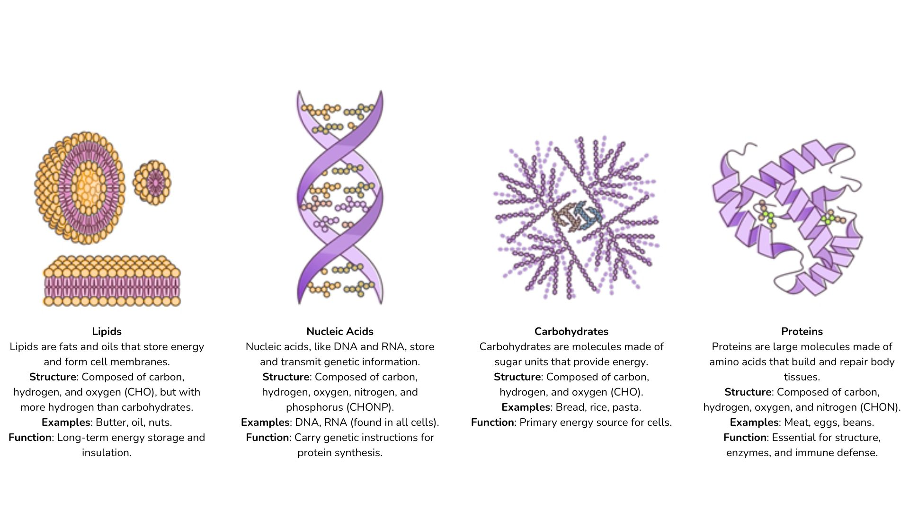

Unit 2: Biological Macromolecules
In Unit 2, we explore the four main families of biological macromolecules. This unit focuses on studying the structures of these molecules as it determines their specific functions. These biological macromolecules, also known as biomolecules, are essential for the functioning and health of living organisms.
Ever Wondered,
- Why biological macromolecules are considered organic?
- Waterfowl, such as ducks, have a coating on the feathers that keeps them from getting wet. What is the molecule that makes up this water-repelling coating?
- Did you know that humans share more than half of their genetic material with chickens, fruit flies, and bananas?
Most biological macromolecules are polymers of high molecular weight assembled from relatively simple precursors. A polymer is a long molecule consisting of many similar or identical monomers joined by covalent bonds. In addition to forming polymers, some monomers have functions of their own
Carbohydrates are a group of macromolecules that are a vital energy source for the cell and provide structural support. Proteins are perhaps the most versatile of all biomolecules and are involved in many functions. Lipids vary in form and function. While nucleic acids are the most important macromolecules for the continuity of life.
Carbohydrates, proteins, and fats are the main types of macronutrients in food (nutrients that are required daily in large quantities). They supply 90% of the dry weight of the diet and 100% of its energy. The composition of the food you consume determines the corresponding quantities of biological molecules supplied to your cells. So, a balanced diet is required to deliver the healthy macromolecule amounts required to keep cells functioning.
